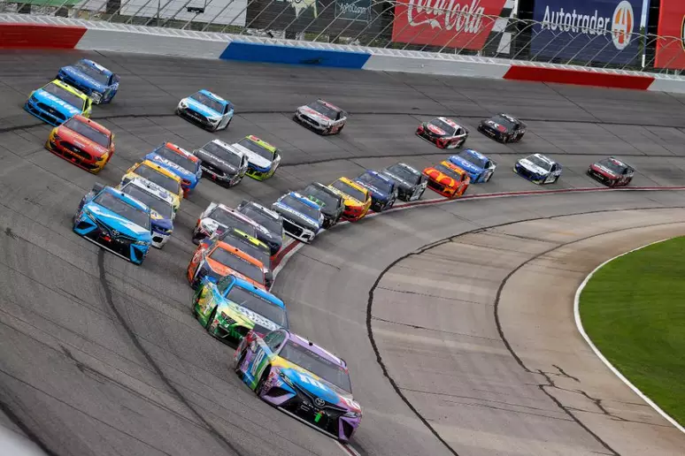

Sobre a NASCAR
A NASCAR (National Association for Stock Car Auto Racing) é a principal categoria de corridas de stock car nos Estados Unidos, famosa por suas emocionantes disputas em circuitos ovais de alta velocidade. Fundada em 1948, a NASCAR se tornou um dos esportes mais populares da América.
